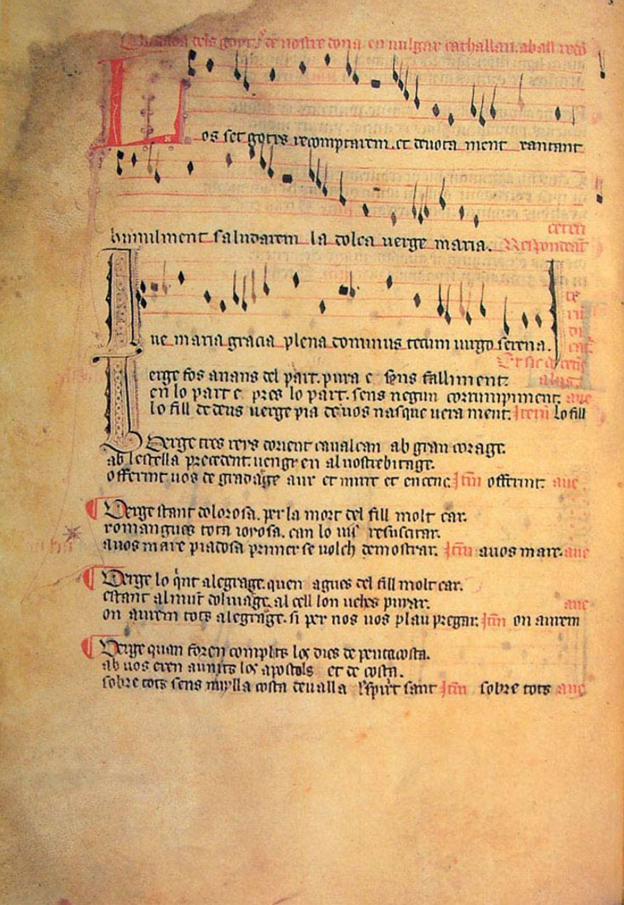

880 年，一些牧童在蒙特塞拉特山（Montserrat，即“serrated mountain”，意为“锯齿山”）上放牧羊群时看到了一道耀眼的光芒从山洞里传来，伴随着强光的还有悦耳的音乐。他们去了那里，找到了一座圣母木像，今天称之为 La Moreneta。他们当时向主教报告了这一情况，主教立马明白这是超自然的奇迹。后来人们曾试图将雕像从洞穴中移走，但它太重了，无法移动，于是他们将此解释为圣母希望留在那里，并因此在其周围建造了一座修道院。据说这雕像是圣路加雕刻而成，由圣彼得带到西班牙，并在摩尔人占领的时候隐藏在了洞穴中。这个雕像一经发现就受到了许多朝圣者的崇敬。修道院具体建立时间不明，但已经有文件证明，在公元 945 年已有修道院在蒙特塞拉特成立。
公元 1025 年，里波尔（Ripoll）修道院院长奥利巴（Oliba）创立了蒙特塞拉特修道院，而后渐渐名气越来越大。《圣母玛丽亚坎蒂加》等歌集的流传，更是让这所修道院声名远播。
公元 1811-12 年，在拿破仑战争期间，蒙特塞拉特修道院遭到严重破坏，大量的典籍和抄本被付之一炬。幸运的是，有一部抄本因为出借给一位巴塞罗那学者研究而幸运地保存了下来，也就是这本《红皮书》（Llibre Vermell of Montserrat）。
这部完成于 1399 年的具有重大历史意义的抄本《红皮书》最初共有 172 张对开羊皮纸，其中 35 张后来丢失了。它的主要内容包括布道、神学论著、修道院的特权、修道院所依赖的兄弟会的章程，以及蒙特塞拉特圣母代祷时所发生的奇迹的记述集。然而，最重要的是记录在第 21 到第 27 张对开纸上的 10 首献给圣母的歌曲，以供前来修道院朝拜圣母的朝圣者唱歌跳舞时使用。据说原来记录的歌曲总数更多（可能有 14 首），一部分已经丢失了。这 10 首歌曲的作者没有署名，现在也无法考证出来。
在第一和第二首歌曲中间，《红皮书》的抄写者给出了一段描述歌曲功用的详细明晰的指示：
因为朝圣者，在教堂中为蒙特塞拉特的圣母守夜时，有时会有唱歌跳舞的欲望，甚至白天也想在教堂广场上（这里只能唱高尚和虔诚的歌曲）做这些事，所以写作出来一些合适的歌曲以供这种需求。应当以崇敬和谦逊的方式使用它们，以防打扰那些希望继续祈祷和进行宗教沉思的人们，顺便提及一下，在晚祷中每个人都应当虔诚地将自己奉献给祈祷和沉思。
几页之后，他还建议：“蒙特塞拉特的朝圣者应以拘谨的方式说话，在去圣龛的路上、在圣龛前和回家的路上应避免轻浮的歌曲和猥亵的舞蹈。”
修道院要接待大量前来朝拜的人。为了禁止人们在院子里甚至在圣龛前进行各种无关宗教的歌舞活动，又不用驱离他们或在别处建造新的修道院，蒙特塞拉特的修士们组织歌舞活动来赞美圣母。他们保留了一定的流行曲调和节奏，提供卡农、叠句和应答部分，既容易唱，也容易记，还可以随之起舞。这些歌曲原先的世俗歌词被替换成赞美圣母玛利亚的诗文，即所谓的换词歌（contrafacta）。他们还增加了新的诗歌和音乐形式供礼拜仪式和准礼拜仪式使用。
Los Set Gotxs 是其中的第 5 首。《红皮书》中一共有 10 首歌曲，它们分别是：
- Song: O Virgo Splendens (fol. 21−22v) ("O Splendid Virgin") 童贞女灿烂地照耀
- Virelai/danse: Stella Splendens (fol. 22r) ("Splendid Star") 闪亮的星照耀
- Song: Laudemus Virginem (fol. 23) ("Let us praise the Virgin") 让我们赞美童贞女
- Song: Splendens Ceptigera (fol. 23) ("Splendid ruler") 闪耀的君主
- Ballad/danse: Los Set Gotxs (fol. 23v) ("The seven joys") 七喜乐
- Virelai: Cuncti Simus Concanentes (fol. 24) ("Let us sing together") 让我们一起歌唱
- Virelai/danse: Polorum Regina (fol. 24v) ("Queen of the Poles") 女王围绕
- Virelai: Mariam, Matrem Virginem, Attolite (fol. 25r) ("Praise Mary, the virgin mother") 玛丽亚，童贞女母亲
- Motet: Imperayritz de la ciutat joyosa / Verges ses par misericordiosa (fol. 25v) ("Empress of the happy city" / "Virgin, out of mercy") 欢乐之城的女皇/出于怜悯的童贞女
- Virelai: Ad Mortem Festinamus (fol. 26v) ("We hasten towards death") 我们奔向死亡
这首 Los Set Gotxs 是用加泰罗尼亚语写就的，是一首舞蹈歌曲，也是现存最早的加泰罗尼亚语歌曲。歌词来自一首关于“圣母七喜乐”的流行的叙事诗。叙事者在第一段介绍自己，然后按序讲述圣母领报、耶稣诞生、三王来拜、耶稣复活、耶稣升天、圣灵降临、圣母升天七种喜乐，最后为一段对圣母的祷告，请求她接受我们的赎罪，从今起帮助我们过上更好的生活。
2021 年 12 月 3 日，西班牙巴塞罗那圣家族大教堂圣母塔封顶亮星，大教堂官方 Youtube 账号发布视频 Un nou estel està a punt de brillar a la ciutat de Barcelona，音乐家们演奏这曲 Los Set Gotxs 献给圣母玛丽亚。

歌词
Los set gotxs recomptarem et devotament xantant
我将跪伏在地唱述七喜乐，
humilment saludarem la dolça verge Maria.
我将谦卑赞颂仁慈的童贞女玛丽亚。
Ave Maria gracia plena Dominus tecum Virgo serena.
万福玛丽亚，充满恩典，主与你同在，宁和的童贞女
Verge fos anans del part pura e sans falliment
童贞女，你自纯粹中来，全无错误瑕疵，
en lo part e prés lo part sens negun corrumpiment.
分娩前后未曾堕落，
Lo Fill de Déus Verge pia de vós nasque verament.
上帝之子确由你所生，虔诚的童贞女！ [1]
Verge tres reys d'Orient cavalcant amb gran corage
童贞女，东方三博士勇猛驰骋，
al l'estrella precedent vengren al vostré bitage.
循着那星，来到你的居所， [2]
Offerint vos de gradatge Aur et mirre et encenç.
他们向你献上黄金、乳香、没药等礼物。 [3]
Verge estant dolorosa per la mort del Fill molt car
童贞女，你为亲爱的儿子的逝去而悲伤，
romangues tota joyosa can lo vis resuscitar.
而他复活时你重获喜悦。
A vos madre piadosa prima se volch demostrar.
和善的母亲，我向您祈祷！
Verge lo quint alegratge que'n agues del fill molt car
童贞女，你从儿子那里获得的第五种喜乐
estant al munt d'olivatge Al cell l'on vehes puyar.
是看见他在橄榄山 [4] 升入天国。
On aurem tots alegratge Si per nos vos plau pregar.
若您为我们祈祷，我们都将欢愉！
Verge quan foren complitz los dies de pentecosta
童贞女，当五旬节 [5] 结束时，
Ab vos eren aunits los apostols et de costa.
你与使徒和其他人一道，
Sobre tots sens nuylla costa devallà l'espirit sant.
圣灵自由地降临在一切之上。
Verge'l derrer alegratge que'n agues en aquest mon
童贞女，你最后的喜乐不在此世，
vostre Fill ab coratge vos munta al cel pregon.
你的儿子以巨大的勇气带你升入天国，
On sots tots temps coronada regina perpetual.
你在那里统治，成为万有的女王，冠冕永存。
Tots donques nos esforcem, en aquesta present vida,
让我们大家于今生努力奋斗，
que peccats foragitem de nostr' anima mesquina.
将罪恶自可悲的灵魂中驱逐，
E vos, dolçe Verge pia, vuyllats nos ho empetrar.
而您，温柔虔诚的圣母，请帮助我们祈祷。